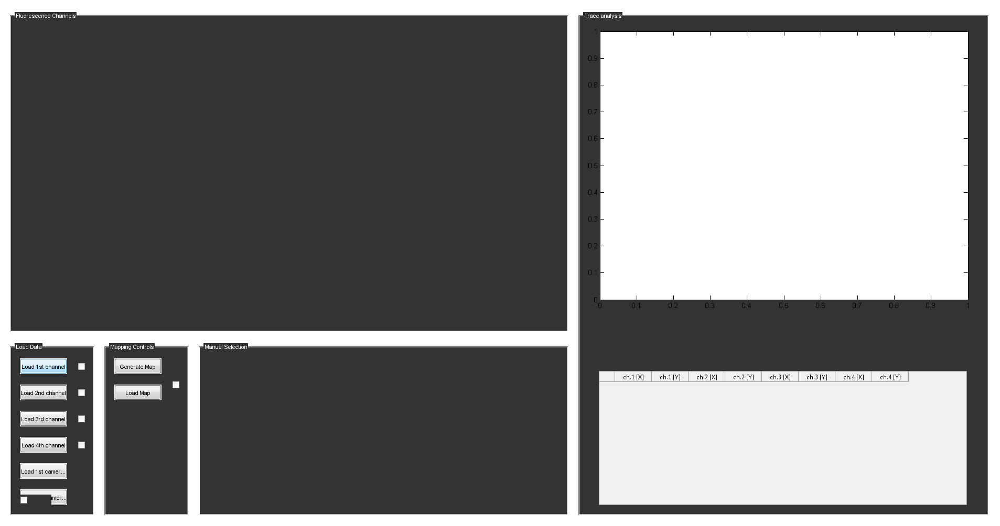

Contents
TRacer
-working title-
This matlab program currently:
- displays multichannel TIRF data
- detects, marks and correlates particles
- extracts their intensity traces over the whole TIF sequence
In the future, it should:
- support data measured with ALEX
- extract FRET efficiencies and dynamics
- plot stoichometry
- correct for background and crosstalk
- perform PDA with photon counts by emCCD calibration over multiple detection channels.
- Additonal Notes: See RevHist() function below
- Documentation: See readMe() function below*
[HINT] Please click on 'Publish' -> Publish for a clean formatted Wiki-style presentation.
function TRacer()
Prepare GUI and Functions
addpath(genpath('./functions')); % Add subfolders to paths load_vars(); % Declare global variables GUImain; % Load main window % GUIchannels;
end function RevHist()
Revision History (as function to make it collapsable)
0.0.1 [BS] GUImain() & openTIF() created 0.1.0 [BS] Opening 4channel data works 0.1.1 [BS] TIF slider works 0.1.2 [BS] Added GUI options and calibration functions 0.1.5 [BS] peakFind() and peakMark() functions implemented 0.2.0 [BS] added manual selection features and preview axes 0.2.1 [BS] added selected particle listbox 0.2.2 [BS] added basic trace extraction 0.2.3 [BS] added trace axes
end function readMe()
Documentation
Global structs:
The global structs used are listed below. See individual GUI functions for documentation of substructs and variables.
- prefs: Contains all GUI and fixed variables
- h: Contains handles (numerical) of all GUI objects
- res: Contains all results and values derived from actual data
- img: Contains raw and cropped data as image arrays
prefs:
- Check load_vars() function for documentation
- currentframe: Holds currently selected frame number, needed by updateGUI()
- res{channel} struct:*
- click: Boolean 0 or 1 value to determine if image was clicked upon
- lastpos:
- XY:
- trace: Holds raw intensity trace from
Functions:
All functions are placed inside subdirectories of the main application. Currently, there are the following categories with the following functions:
external :
end